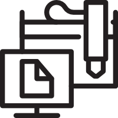
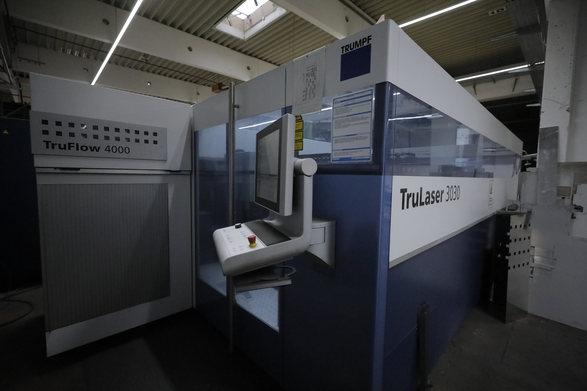
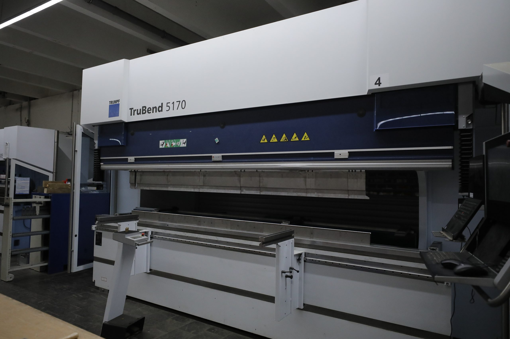
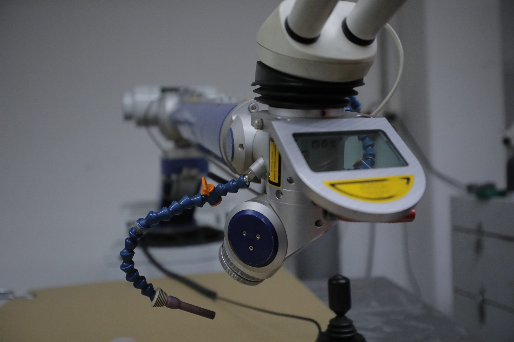
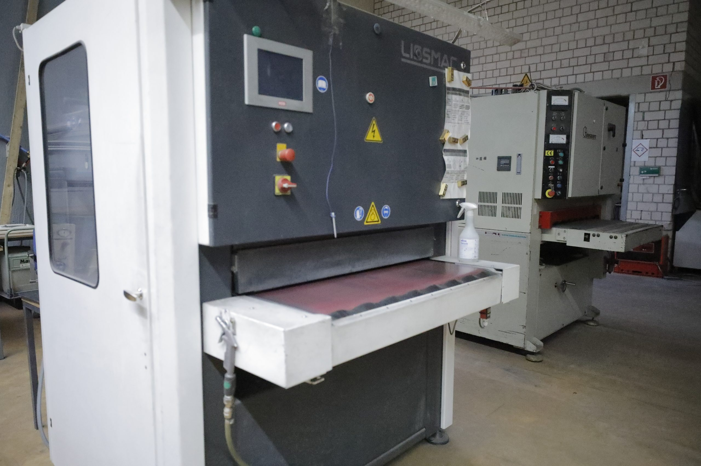
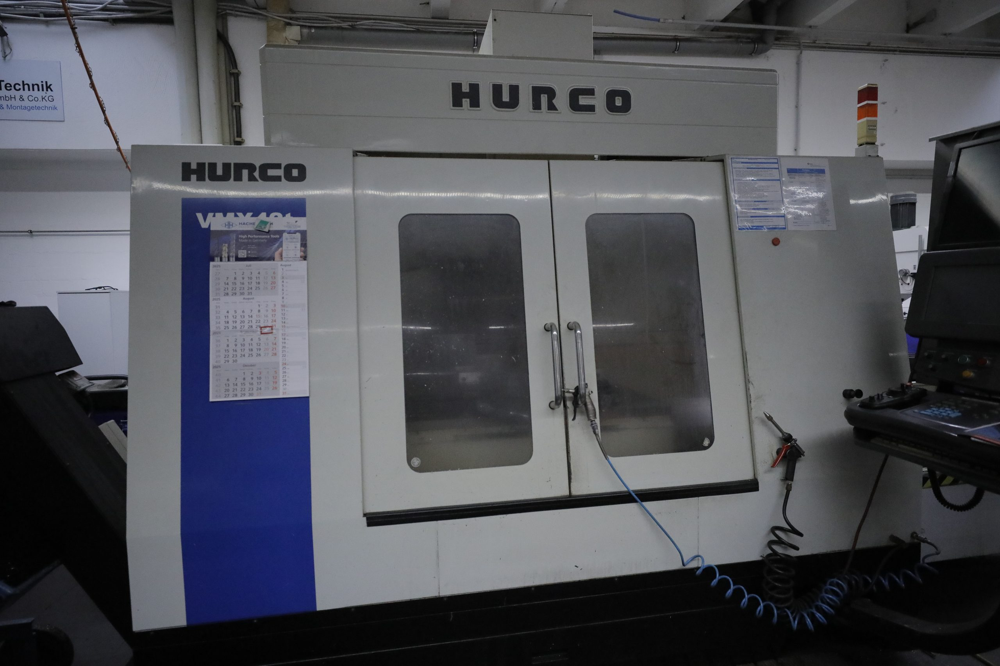
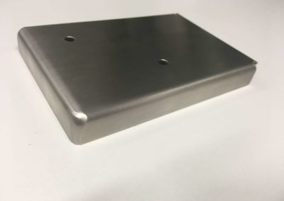

01
Konstruktion & Programmierung
Programmierung und Konstruktion für den Sondermaschinenbau. Individuelle Sonderteile nach Ihren Anforderungen.
Zu dieser Leistung anfragenVon der Konstruktion im Sondermaschinenbau bis zur Oberflächenbearbeitung: Unsere Leistungen greifen ineinander.

Programmierung und Konstruktion für den Sondermaschinenbau. Individuelle Sonderteile nach Ihren Anforderungen.
Zu dieser Leistung anfragen
Konturen aus Stahl, Edelstahl und Aluminium — gefertigt mit Laserschneidanlagen von TRUMPF.
Zu dieser Leistung anfragenFlexible Bearbeitung von Rohren und Profilen mit der TRUMPF TC L 3030 RotoLas.
Zu dieser Leistung anfragen
Blechteile nach Ihren Vorgaben in Form bringen. Mit Abkantpressen von TRUMPF und EHT.
Zu dieser Leistung anfragen
Laserschweißen, WIG, MIG, MAG und Bolzenschweißen. Für Edelstahl, Aluminium, Stahl und Guss.
Zu dieser Leistung anfragenGlasperlenstrahlen sowie Lackieren und Beschichten nach Auftrag.
Zu dieser Leistung anfragen
Entgraten, Kanten verrunden, Oberflächen schleifen und von Hand bis zum Hochglanz polieren.
Zu dieser Leistung anfragen
Bearbeitung von Blechen und CNC-Fräsen mit HURCO-Maschinen.
Zu dieser Leistung anfragen
Wir begleiten Ihr Projekt von der ersten Idee bis zur Umsetzung — einschließlich der Montage Ihrer Bauteile und Konstruktionen.
Montage anfragenAuch Privatkunden sind bei uns willkommen. Wir fertigen individuelle Metallarbeiten nach Ihren Vorstellungen — vom Zaun bis zum Kamin aus Metall. Erzählen Sie uns, was Sie vorhaben.
Für Grundstück, Einfahrt und Garten. Maße und Gestaltung besprechen wir mit Ihnen.
Projekt anfragen02 / INDIVIDUELL GEFERTIGTIndividuelle Lösungen für Treppen, Eingänge und Terrassen.
Projekt anfragen03 / INDIVIDUELL GEFERTIGTIhr Kaminprojekt aus Metall — Ausführung und Anforderungen klären wir gemeinsam.
Projekt anfragen04 / INDIVIDUELL GEFERTIGTZum Beispiel Pflanzgefäße, Möbelgestelle oder dekorative Elemente.
Projekt anfragen05 / INDIVIDUELL GEFERTIGTEine Idee, eine Skizze oder ein Muster: Wir besprechen die passende Umsetzung.
Projekt anfragenJedes Projekt ist anders. Gemeinsam klären wir Material, Maße, Ausführung und die Möglichkeiten der Fertigung.